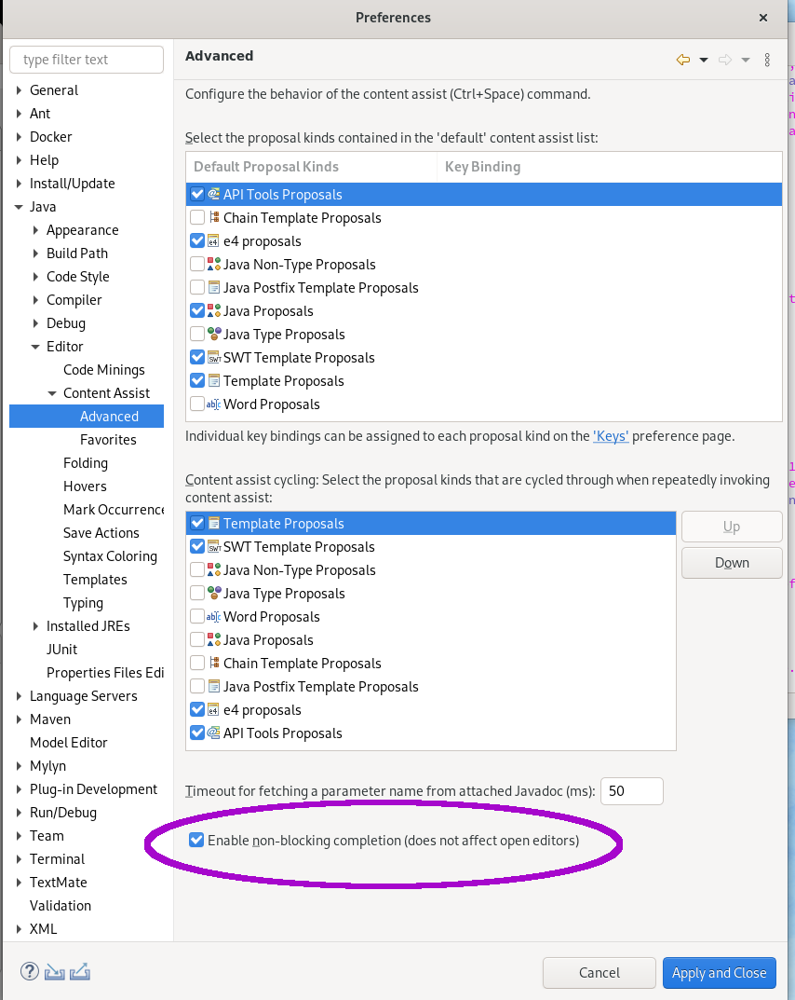

Java™ 14 Support |
|
| Java 14 |
Java 14 is out and Eclipse JDT supports Java 14 for 4.16.
The release notably includes the following Java 14 features:
Please note that preview option should be on for preview language features. For an informal introduction of the support, please refer to Java 14 Examples wiki. |
JUnit |
|
Java Editor |
|
| Non-blocking Java code completion |
By default, code completion in the Java editor is now configured to be computed (when possible) in a separate non-UI thread
in order to prevent UI freezes in case of long computations.
Users can restore to legacy behavior in Preferences > Java > Editor > Content Assist > Advanced by unticking the
enable non-blocking completion checkbox; integrators
can change the value of the  |
Java Views and Dialogs |
|
Java Compiler |
|
Java Formatter |
|
Debug |
|
JDT Developers |
|